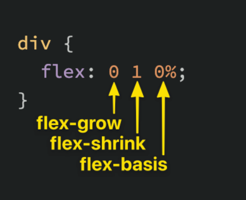

This page will cover Flexboxes
Flexbox is a way to arrange items into rows or columns
Flex container is an element with display: flex property. A flex item is any element that lives directly inside a flex container. An element can be both flex container and flex item.
Nesting will be especially important for building complex layouts
the flex property is a shorthand, a combination of flex-grow, flex-shrink and flex-basis
Defines the flex item's growth factor. On the upper example, every element has flex: 1; which means a flex-grow of 1, so the elements size will be the same. In the example below, the flex-grow property is 2 for the middle element, so its twice as big
Defines the flex item's shrink factor. A flex 1; means a flex-shrink of 1, so the elements size will be the same (default). flex-shrink only ends up being applied if the size of all flex items is larger than their parent container. For example, if our 3 divs from above had a width declaration like: width: 100px, and .flex-container was smaller than 300px, our divs would have to shrink to fit.
For measure
It can be seen, that flex-grow and flex-shrink does not respect width, The elements can grow to fit or shrink to fit.
flex-basis simply sets the initial size of a flex item, so any sort of flex-growing or flex-shrinking starts from that baseline size. The reason we had to change it to auto before, is that with the default 0%, the elements would ignore widths and shrink evenly. Using auto we told the item to check for a width declaration which is 400px in this case
flex: 1; means flex 1 1 0%;
To use auto, we must either specify it separately, or use
flex: 1 1 auto, or use flex: auto which translates to flex: 1 1 auto;
Most likely the flex: x; will be used mostly, and flex-shrink: 0; to avoid shrinking